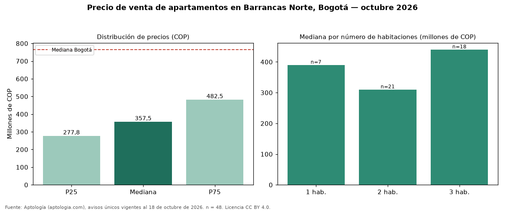

Precio de venta de apartamentos en Barrancas Norte, Bogotá — octubre 2026
COP 358 millones es el precio mediano de apartamentos en venta en Barrancas Norte (localidad de Usaquén), Bogotá (n = 48 avisos únicos). Comparado con la mediana de la ciudad, COP 765 millones, la diferencia es de 53 % por debajo. El área mediana anunciada es 62 m² (en Bogotá: 102 m²). Por metro cuadrado, la mediana es COP 6.758.929/m² (−9 % frente a COP 7.407.407/m² en Bogotá), puesto 110 de 166 barrios con muestra suficiente. El segmento con más oferta es el de 2 habitaciones (21 avisos, mediana COP 310 millones); pasar de 2 habitaciones a 3 habitaciones sube la mediana 42 %. El estrato más frecuente en los avisos es 3. El rango intercuartílico va de COP 278 millones a COP 482 millones (razón 1,7), una dispersión moderada. Datos abiertos CC BY 4.0 de Aptología; fuente y búsqueda de inmuebles: https://www.aptologia.com/venta/bogota/barrancas-norte. Archivos: PDF de 2 páginas, CSV con las cifras y gráfica PNG.

| Avisos únicos | 48 |
|---|---|
| Percentil 25 | COP 277.750.000 |
| Mediana | COP 357.500.000 |
| Percentil 75 | COP 482.500.000 |
| Mediana por m² | COP 6.758.928 |
Fuente: avisos vigentes de portales inmobiliarios recopilados por Aptología, deduplicados (mínimo 30 avisos únicos por celda). Precios pedidos, no cerrados. Fecha: 2026-10-18.